Icosahedron Mood Lamp

About the Project
What does it do?
This is a mood lamp with an icosahedron design. It's designed to provide a variety of mood colours with a press of a button.
What are it's features?
- Provides different mood lightings.
- Changes colours & pattern displays with a push of a button.
- 3-dimensional design that provides pathway for light in all directions.
What will you make?
| CAD Design, Graphics | Product design |
|---|---|
| Laser Cutting | Frame structures, Diffusing panels |
| 3D Printing | Joints, casing |
| Processing | Arduino UNO |
| Input Devices | Push-button |
| Output Devices | Neopixel LEDs |
Bill-of-Materials
| Sn. | Qty | Item Description | Approx. Cost |
|---|---|---|---|
| 1. | 1 | $11.41 (provided) | |
| 2. | 1 | $0.35 (provided) | |
| 3. | 1 | $5.50/1metre (provided) | |
| 4. | 1 | 5mm acrylic sheet (frosted/clear/white) | - (provided) |
| 5. | 1 | 5mm plywood | - (provided) |


Ideation
Before starting on the project, I had to do some research. During my research, I found many mood lamp designs, and a lot of them had a single acrylic laser cut design.
I wanted to try something a bit different and was thinking of trying to create a more 3-dimensional looking design for display.
As I looked further into it, I found more like it such as cylindrical and polyhedron. In the end, I decided to attempt creating a regular polyhedron, specifically the icosahedron, as there are not many icosahedron mood lamps.
Research
What is icosahedron?
It is an interesting mathematical shape with:
- 20 faces of equilateral triangles
- 30 edges
- 12 vertices (sharp corners)
Concept Sketch

For my icosahedron project, I have a few components to take note of:
- Laser Cut
- Sticks/Frame structure (edges)
- - 30 sticks
- - 5mmx5mm cross-section square tubing
- - 5mm plywood
- - all the tubing has to be equal in length (
- - used to form the structure of the entire project (just like a skeleton)
- Diffuser panels (faces)
- - 20 equilateral triangles
- - 5mm acrylic
- - used to diffuse the lighting to create an effect
- Sticks/Frame structure (edges)
- 3D Printing
- Joints (vertices)
- - 12 pieces
- - 5 attachment points for each piece
- - 5mmx5mmx5mm square-shaped hole
- - used to connect the sticks together
- Arduino casing
- - used to store arduino board
- Joints (vertices)
Here is an attached file to give you a better visualisation of how the general shape of the model would look like after assembling.
I created this 3D figure to assist me in planning out the right angles and dimensiones tfor the fitting of the mood lamp.
To create this 3D figure, I used the 3d geometry function, to help draw the figure without needing to refer to a single plane, and the parameters, to help set my three planes to the fix edge length (length of the triangles, excluding any considerations for the individual components) and the golden ratio (*impt to remember:[1+sqrt(5)]/2). Which I then extruded out to a desired thickness.
Implementation
Fabrication
Laser cutting
Acrylic
For the diffuser panels, I planned to use acrylic. The goal is to allow light to pass through the wall of the lamp so I decided to go for either a clear, frosted or white coloured acrylic. I've created regular equilateral triangles with a part of the corners cut of, this is to allow the panels to fit in with the attached joints and sticks.
 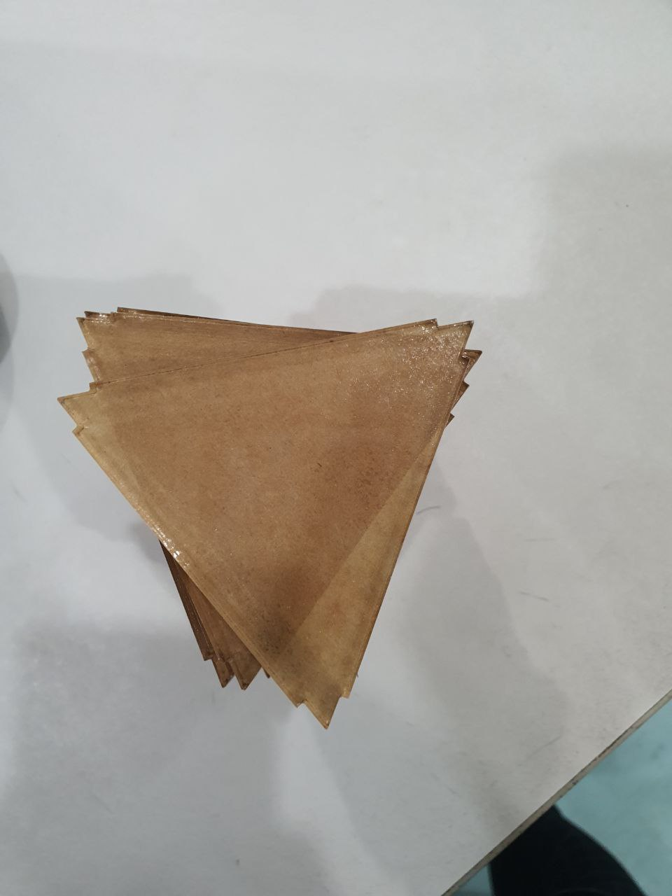
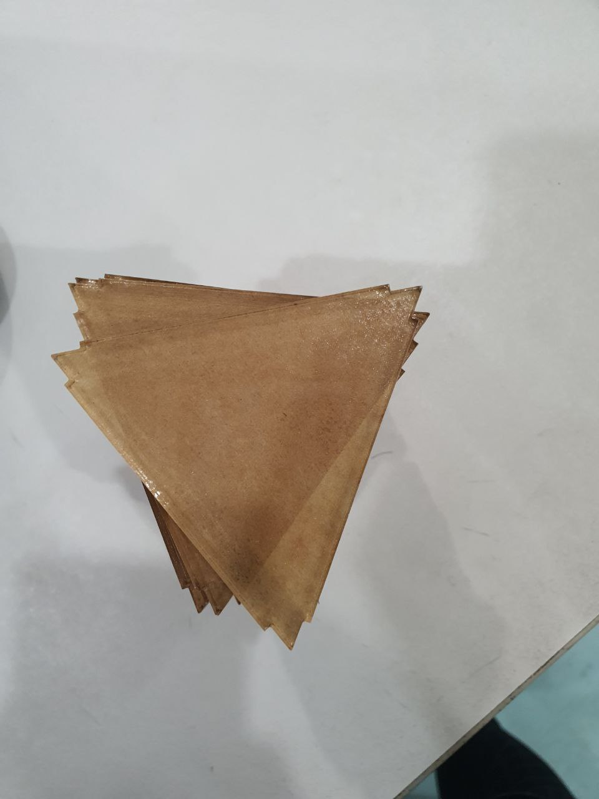
Wood
I'll be using plywood to cut out 5x5 sticks to use as the structure/skeleton of the mood lamp design.
For this component, I simply used the 'Box' and put to my desired length. Afterwards I use 'Retangular pattern' to make 29 other similar copies.
 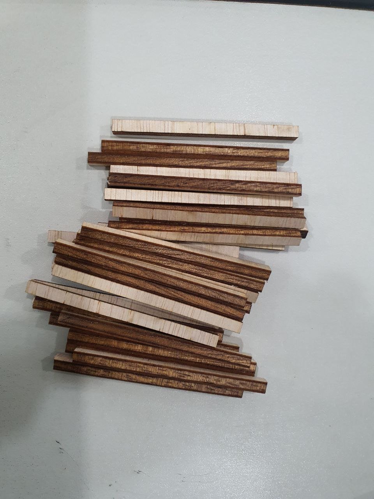
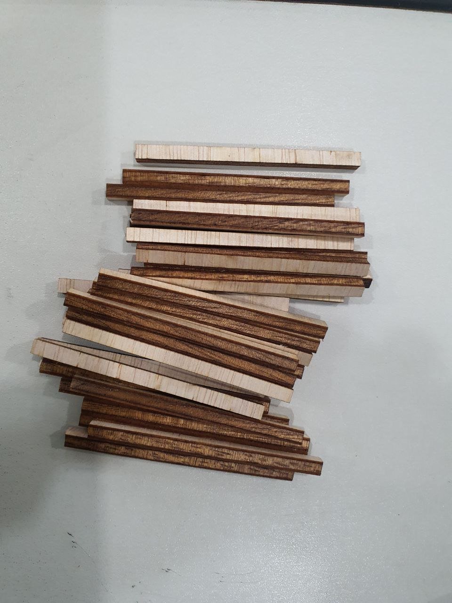
3D Printing
I'll be 3D printing a casing to hold the arduino as well as 12 joints to connect the laser cut sticks. It was quite doable to create the casing, especially when I was able to refer to dimensions online and I also have an arduino board on hand to take in the measurements. As for the joints, I think this might be one of the more challenging components of the project as I am not as familiar with the routine of making the joints. (especially to scale) It took me quite a while to draw up the joint design but I'm satisified with the outcome!
For the casing, I created two seperated components, the casing and the cover(lid).
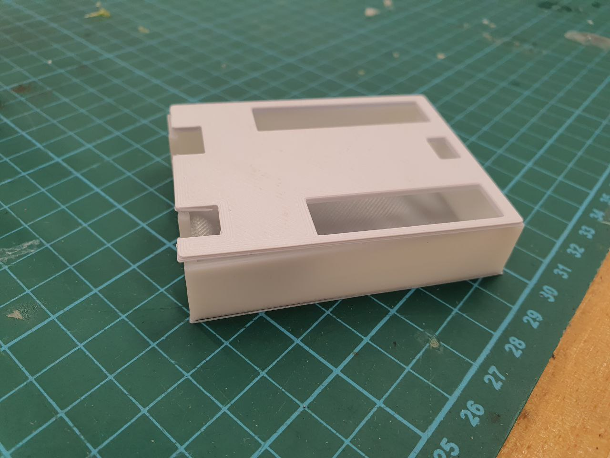
How I drew my casing?
So basically, I started out with a simple rectangle sketch (following the arduino board dimensions) and 'offsketch' to create the outer wall. Then I extruded the sketch and design it however I like.
For me, I was afraid the distance and scaling would still be off as I am unable to put them together to see the actual sizing, whether it fitting. So, I made the holes bigger incase. (make room for any errors)
Moving on to the joints, it took me a couple of trials to design the joint of my preferred shape, angle, sizing etc, but it turned out quite well in the end.
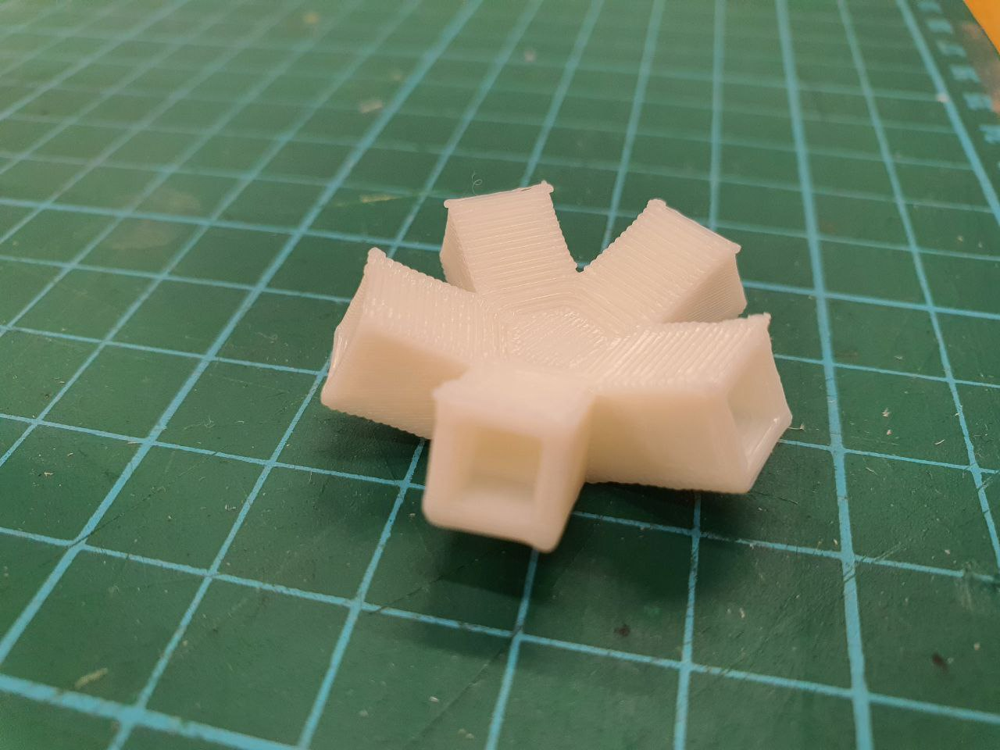
I first created a polygon (hexagon), with its centre point at the point of origin, to create a rough scale of how/where I would want to position my attachments in the later stage.
Next, extrude the hexagon sketch and created a new sketch on the top plane. For this sketch, I select 'Offsketch' after tracing the first hexagon to create a smaller hexagon inline with the centre point of the previous hexagon. For this step, I wanted to create a 'Loft' so that I'll have a diagonal plane to sketch of the attachment cross-section.
This brings me to the next step where I remove the extruded body and replaced with a loft, selecting the top and bottom sketch. Afterwards, I select 'Construct' and click on the diagonal face of the loft and then 'Çreate Sketch'.
After I'm done with my sketch, I extrude the cross-section to my desired length, followed by constructing another plane on the cross-section at the end of the attachment, setting to my desired distance and using 'Split body' after. I did this step because I wanted to 'Shell' the end of the attatchment without having to much depth in my square hole. So by splitting the body, I'll get to separate bodies and the inner attachment will not get affected by the 'Shell' function.
Once I'm done with this, I used the 'Circular Pattern' function to create 4 other copies around the first hexagon. (use the vertical axis as axis)
Now that I've completed my design, I made the necessary adjustments to touch up my joint design!
Electronics & Coding
For this section, I started out using TinkerCAD and tested my circuit using that software.
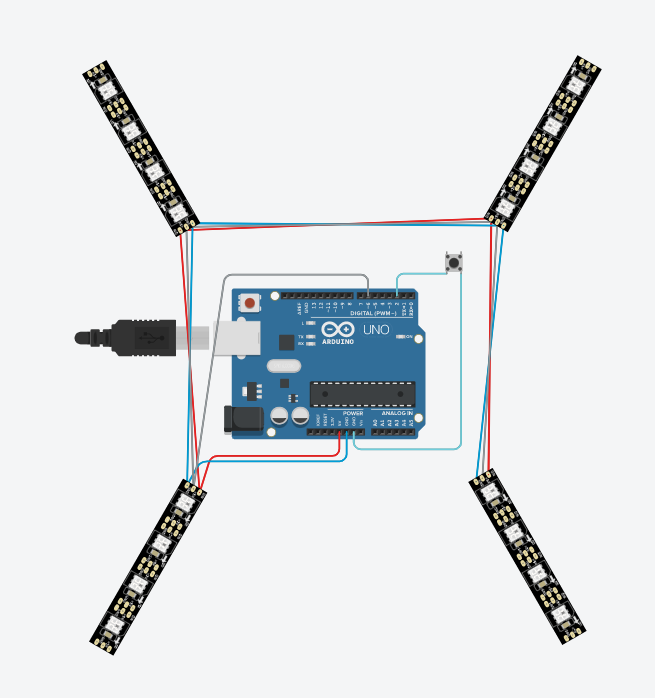
I have connected to the relevant points as shown above. For my neopixel, I will be soldering two wires together and connecting them from the start of each led strip. This is to create a star lighting effect where the light while be travelling outwards from the center.
Here's my code:
Now to the actual thing! I have cut out the neopixel to have 4 LEDs on each strip. Referring back to my TinkerCAD connections, I placed arrange my circuit components according to the design ('star' shape) and made sure that the wires were connected to the right places. For the wiring of my neopixel layout, I have first cut out 3 sets of 3 wires (Din, +5V and GND) of equal length, followed by stripping the ends (to remove the rubber insulation). Next, I twisted the stripped out ends and soldered them together so that they will stay together as I solder the wires to the neopixels. Before soldering, I had to make sure that the direction of where I'll be soldering my neopixel is correct(connect to the flat end of the arrrow/the end that has a Din, NOT Do) and the wires are connected to the right areas(for this project, it will be GND to GND. +5V to +5V and Vinin to Vin). For the wires that will be connecting the starting neopixel to the arduino board, I exchanged the regular wires to ones with a male end (have a pin protruding, normally used to plug into things, which I have connected to the arduino board at labels 'GND', '+5V' and '9' matching the labels on the neopixel where '9' will e connected to Din respectively). As for the last neopixel, only 1 set of wire will be connected which it to the second last neopixel. On to the push button, I have used the same type of wire as the starting neopixel (male) and connected one wire to '2' and another to 'GND'. To be able to connect the wires as well as ensure that current flows through the circuit, we will have to solder the wires onto the input/output.
Tip: Now, there's going to be a lot of wiring going on, to make it easier to identify as you carry out the connections, try to use different coloured wires to represent a type of connection. (normally red represents +5V and black/blue represents GND, as for the rest, you may use any colour you like!)
Note: Make sure that the solders are not touching one another as you solder the wires in. If you make a mistake in the soldering, just place the tip of the soldering iron over the soldered in flux and quickly placed the desoldering pump right over the melted flux to remove/suck out the unwanted flux.
After I've completed the connections, I used the USB cable to connect the arduino board to my code. For the program to run, I verified and upload the program into the arduino board.
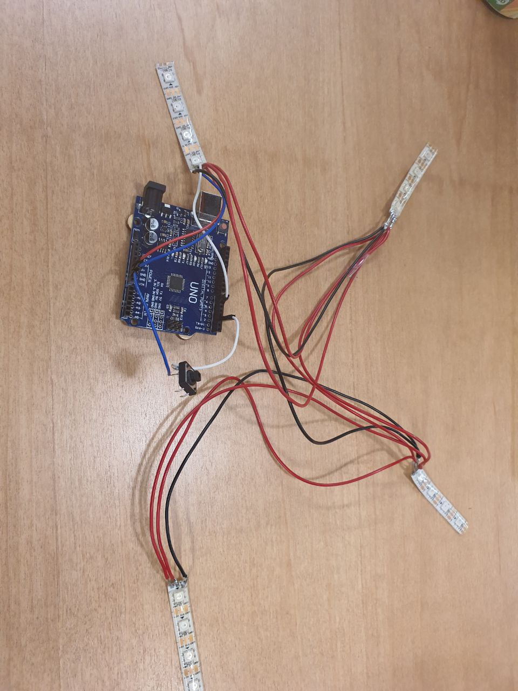
Assembly
Now that all the components that make up this lamp is completed, let's start assembling it!
First, I connected the stick to the joint, 1 joint will be connecting 5 sticks. Luckily for me, the hole for the joint attatchment fits the cross-section of the stick very well, I was able to connect them easily without having to use any methods (e.g. glue) to attach the components together. Additionally, it will allow me to remove/open up a part of the mood lamp easily whenever I need to. After forming the lamp structure, I have to attach the diffusing panels. For this I ended up using clear acrylic. however I left one side of the paper on to allow lesser light to pass through and hopefully for a more 'diffusing' effect. Unlike the framing of the lamp, I wasn't so lucky. As the joints were 3D printed out, it was slightly harder to get the right dimensions required to fit the other components(mainly diffuser panels) to it, especially when the joint component is not complete flat. For my panels, as I was assembling the mood lamp, I noticed that my panels were to small and realised that although I have taken into consideration of the length of attatchment, I missed out a portion of the joint. This leads to a smaller sized panel. To resolve this I first tried to use hot glue gun to add a layer between the frame and the panels, but to no avail the gap was way to big to fill up which led to my next attempt of using tape to hold the panels into place. In the end, I decided to use use hot glue gun to glue the corners of the panels to the vertices (space between each attachment).
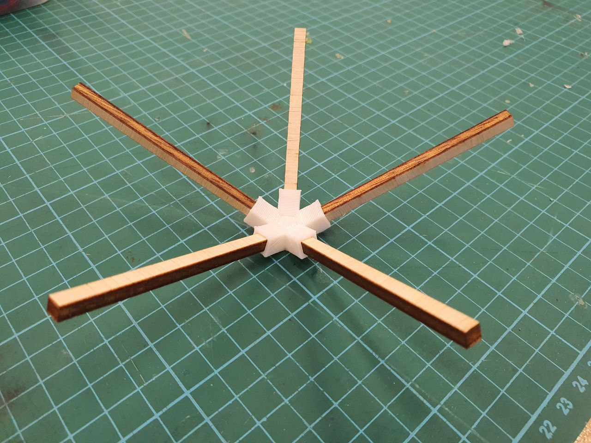
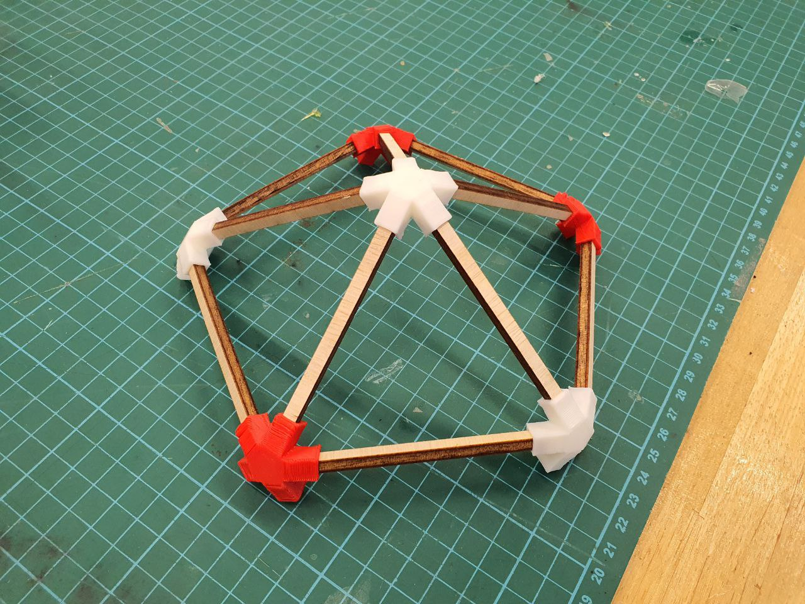
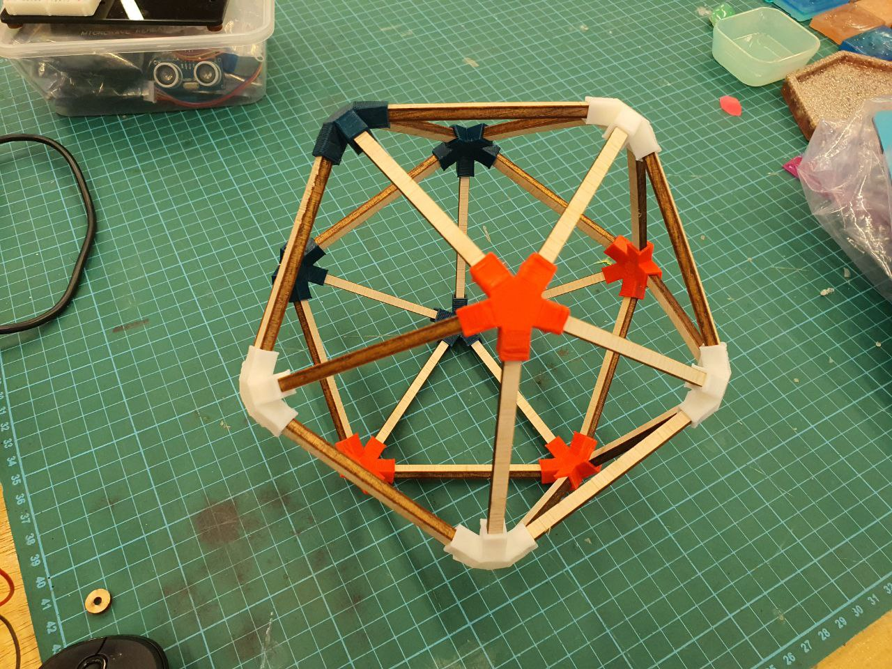

And last but not least, it's time to put in the circuit! Firstly, I placed my arduino board into my 3D printed casing and fortunately, it fits! At first I designed it with holes to allow me to screw the board in in case of a loose design and the board falling out. After I have placed my arduino and taped up the casing so the lid doesnt fall out so easily, I went ahead to lay out my neo pixel LEDs. For this portion, I wanted to have the lights projected in all direction to display a variety of different patterns in different directions, hence I placed each neopixel strip over a stick (as it is more stable) in many different directions to create a non-linear 'star' with different orientations.
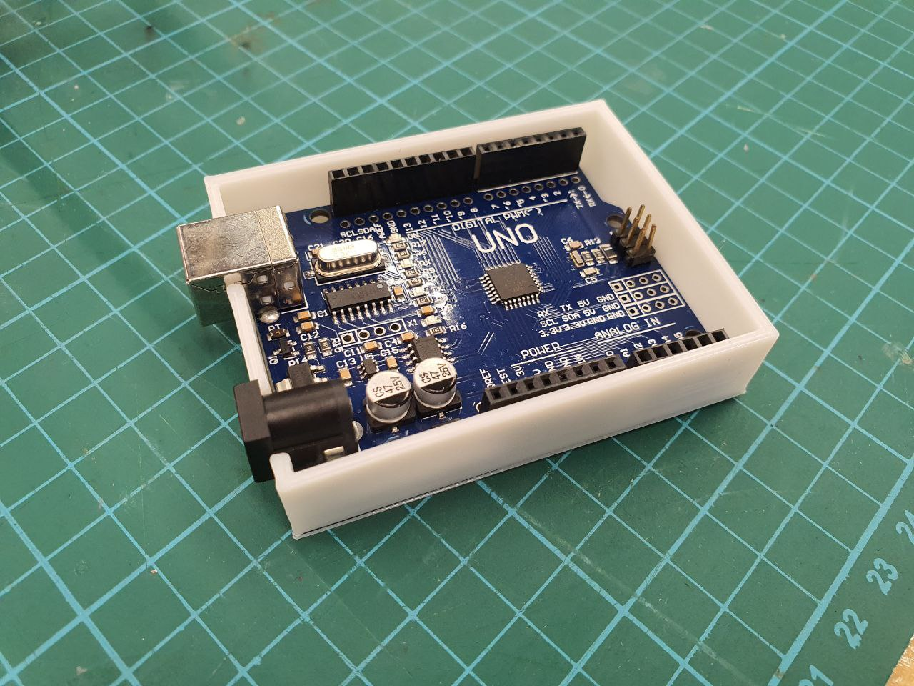
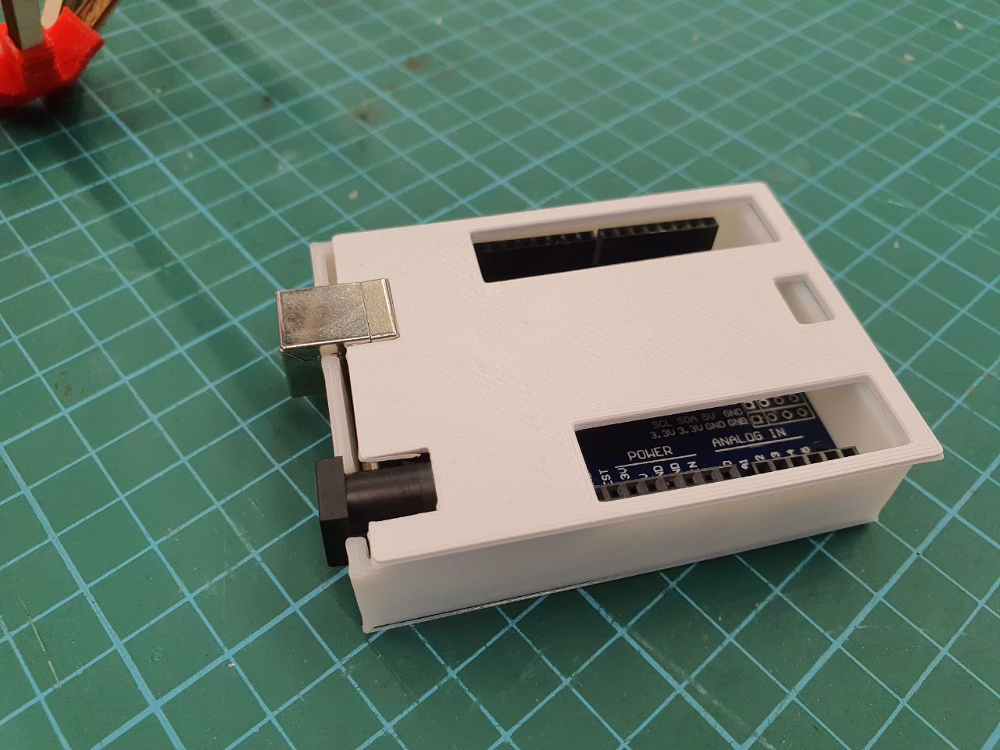
Results
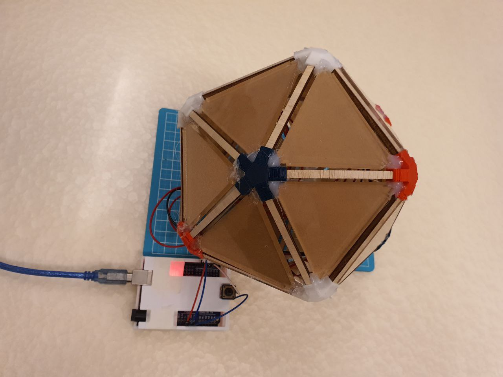 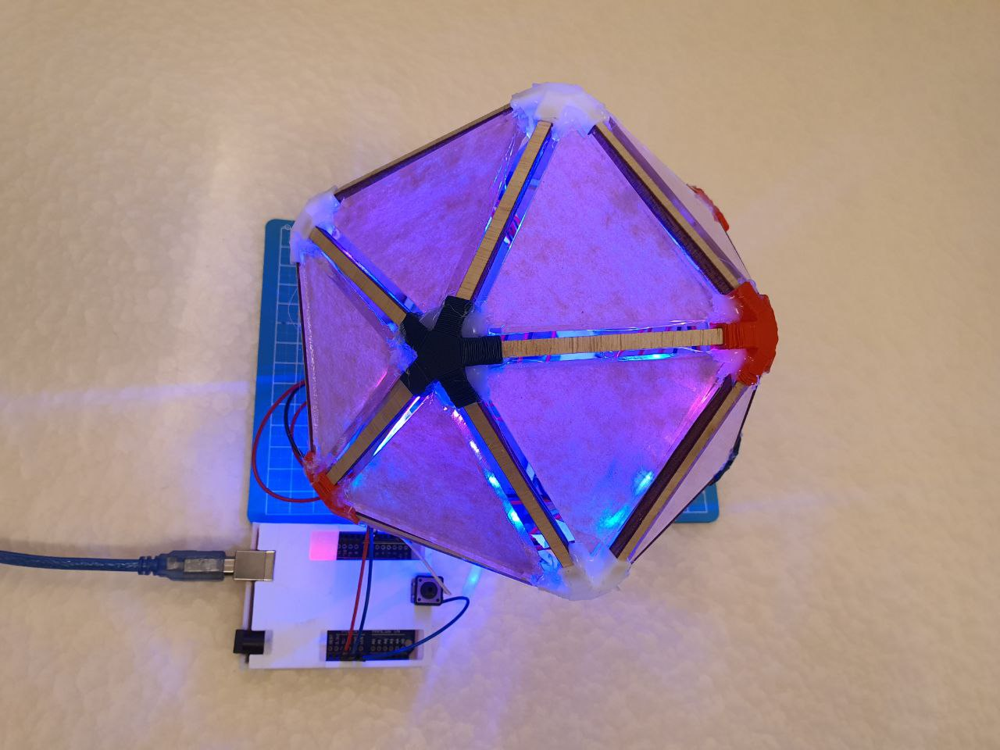Here is my final product!
After completing this project, I am very satisfied with my work. Knowing that I had put in the effort to give my best work makes all the time and work worth it! For me, I started with multiple ideas that I wanted to try creating. However, with the time constraint to create this individual final project, I had to quickly decide on one that is more realistic to create within that short timeframe. At first I was jumping from one idea/feature to another because there was some difficulty with that component and I was trying to find some alternatives. But soon, I decided to stick to my current idea and quickly draft up a plan on the project details. Throughout my fabrication, I faced many difficulties in terms of: "the code is not working", "my components sizes do not match", "it doesn't fit" etc. To resolve them, I kept searching up on similar projects and related topics to understand better why my work isn't turning out how i wnt it be be.
From this final project as well as my other mini-projects, I got to try out and experience multiple methods of fabrication and prototyping. I am glad I got the chance to try out this many methods/steps while creating this project. From this experience, I have faced several difficulties and took a while to pick up the skills along the way, but from this I got to learn more than what was thought I would have as I try to figure my way through the module and what my capabilities are. Additionally, I got to pick up new skills as well as ive deeper into old ones, as well as learn to apply these skills in fabrication and prototyping. ALthough, it was challenging and I faced many setbacks in my projects, through perseverence, and with the help of internet as well as help from my lecturer, friends and family, I managed to overcome these obstacles.
On a Side Note:
Other designs/changes made in the future: creating another type of polyhedron/replacing the diffuser panel with glass & create an 'infinity lasor' type of display/controlling the lights using sound or music/creating shadow patterns to be projected out of the lamp.
In addition, I would like to try out other fabrication projects as well!